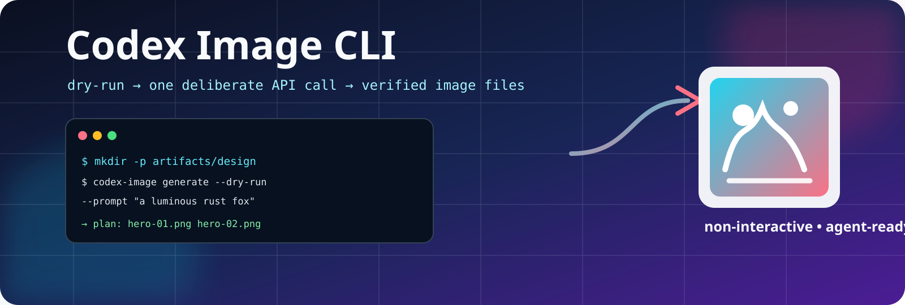

Agent-ready JSON
Discover capabilities with ai-help --json, validate with --dry-run, and parse exactly one report.
🖼️ Terminal-first image generation
A safe, non-interactive Rust CLI for OpenAI GPT Image 2. One deliberate operation, predictable JSON, durable Batch jobs, and no hidden retries.
Why codex-image?
It is designed for humans who want a dependable command and agents that need a stable machine contract.
Discover capabilities with ai-help --json, validate with --dry-run, and parse exactly one report.
There are no automatic retries for uncertain image POST outcomes. The CLI tells you what to inspect next.
Outputs are container-validated, collision-protected, staged, and published with identity checks.

Choose your path
The provider is explicit because access, entitlement, and billing are different things.
Uses OPENAI_API_KEY and the documented GPT Image 2 API. Supports the full generation and Batch workflow.
Uses the locally authenticated Codex executable with --provider codex. It currently publishes one validated PNG per command.
ChatGPT/Codex subscriptions and API billing are separate. A key or local login does not prove entitlement, billing setup, organization verification, or model access.
Start safely
Validate names, formats, output paths, and provider capabilities before any key is read or request is sent.
Follow the quickstart →Generate: synchronous images for quick jobs.
Batch: durable asynchronous API jobs with status and retrieval.
Run: plan, approve, shard, and resume large manifests.